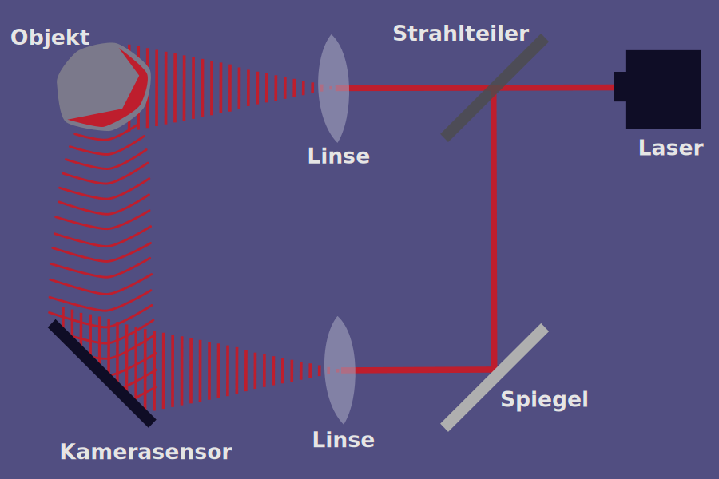

Wir bieten ultra miniaturisierte 3D Holographie und führen Sie in eine neue Zukunft in der
Medizintechnik! Karriere
Über uns
AKmira optronics entwickelt miniaturisierte 3D Scanner, deren primäres Einsatzgebiet die
3D Endoskopie/ Medizintechnik sein wird. Die zugrunde liegende – im ausser-akademischen
Umfeld neuartige - Technologie basiert auf der digital, optischen Holografie und ist
eine
Erweiterung der bekannten optischen Interferenzverfahren wie OCT (Optical Coherence
Technology) oder
der Interferenz-Mikroskopie. Inhärente Vorteile sind u.a.:
Scanning von 3D Objekten auch mit sehr strukturarmer Oberfläche
Optisches „Stitching“ auch über viel größere Bereiche als das Scanfeld
Handbewegung des Scanners bzw. Zittern hat keinen negativen Einfluß
RGB Farbinformation mit mikroskopischer 3D Auflösung
Keine bewegten Teile im 3D Scanner
Der Gründer und Geschäftsführer Dr. Alexander Knüttel hat die – im industriellen Umfeld
neuartige - digital,
optische Holografie eingeführt, welche durch eine kompakte Modularität
unterschiedliche Scanner-Typen ermöglicht und in unterschiedlichen Märkten der
Medizintechnik
einsetzbar ist. Ziel ist die Miniaturisierung auf Volumina mit einigen mm Kantenlänge in
jeder
Dimension, bei gleichzeitiger Integration von 3D Farbinformation und weiteren
Messmöglichkeiten
unter der Oberfläche.
Unser schnell wachsendes Team ist in sehr unterschiedlichen, technologisch
herausfordernden,
Disziplinen unterwegs und hat den Sitz in Potsdam.Unser aller Kern-Motto ist:
Spring – und lass Dir dabei Flügel wachsen (Ray Bradburry)
Unsere Technologie
Die zugrunde liegende Technologie von AKmira optronics basiert auf
der digital, optischen Holografie und ist eine Erweiterung von bekannten
optischen Interferenzverfahren. Diesen gemeinsam ist eine (teil-) kohärente
Lichtquelle, dessen Wellenfront in Richtung Objekt und Referenz-Spiegel
aufgeteilt wird. Nach Reflektion an Objekt und Spiegel werden die – durch das
Objekt entsprechend modifizierten – Wellenfronten zusammengeführt und
einer Kamera zugeleitet. Die resultierenden 2D Interferenzsignale werden
mit hoher Bildwiederholrate inline zu einem 3D Objekt ausgewertet.

Kontaktieren Sie uns unter:
Dr. Alexander Knüttel
Geschäftsführer
Ricarda-Huch-Str. 2
14480 Potsdam info@AKmira-optronics.de
Tel. 0331/982231-0